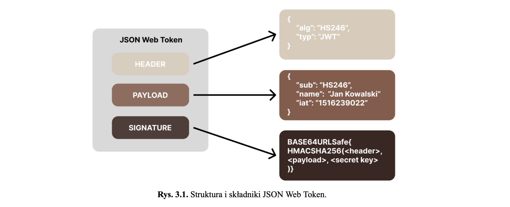

W tekście pracy jako rysunki należy łącznie traktować i opisywać:
Przed rysunkiem należy zostawić jeden pusty wiersz. Rysunek ma być wycentrowany i podpisany. Podpis ma być też wycentrowany i znajdować się bezpośrednio pod rysunkiem.
Format podpisu:
{RYSUNEK} Rys. nr dużego rozdziału.nr rysunku w TYM rozdziale. Tytuł rysunku.
Po podpisie zostawić jeden pusty wiersz. Na rysunki należy się powoływać w tekście z użyciem ich numerów. Nie stosować określeń typu: na poniższym rysunku... gdyż są niejednoznaczne.
Przykład:

Nie daj sobie nigdy wmówić, że czegoś nie potrafisz.
~Chris Gardner